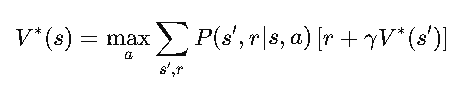
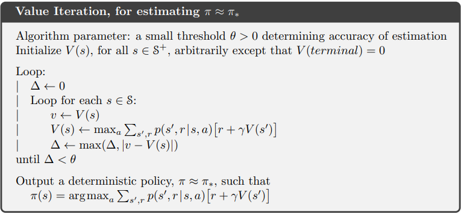

Unlocking the Power of Value Iteration
Now that we've mastered Policy Evaluation and Policy Iteration, it's time to introduce another powerhouse method in solving MDPs—Value Iteration. This approach refines our decision-making strategy even more efficiently.
If Policy Iteration is like slowly tweaking a dish recipe over multiple attempts, Value Iteration is like skipping straight to the best version by aggressively optimizing each step. Let’s break it down!
What is Value Iteration?
Value Iteration is an alternative to Policy Iteration that directly updates the value function to find the optimal policy without explicitly maintaining a separate policy table. Instead of iterating between evaluation and improvement, it updates state values in one go and derives the policy as a byproduct.
The Bellman Optimality Equation
At its core, Value Iteration relies on the Bellman Optimality Equation:
This equation tells us that the best value for a state is obtained by choosing the action that maximizes future rewards. Instead of iteratively evaluating a fixed policy, we continually update our value estimates using this equation.
How Value Iteration Works?
The process of Value Iteration is simple but powerful. Here’s how it works:
Algorithm: Value Iteration

Implementing Value Iteration
import numpy as np
def value_iteration(P, R, gamma=0.9, theta=1e-6):
n_states, n_actions = R.shape
V = np.zeros(n_states)
while True:
delta = 0
for s in range(n_states):
v = V[s]
V[s] = max([sum([P[s, a, s_prime] * (R[s, a] + gamma * V[s_prime]) for s_prime in range(n_states)]) for a in range(n_actions)])
delta = max(delta, abs(v - V[s]))
if delta < theta:
break
policy = np.zeros(n_states, dtype=int)
for s in range(n_states):
policy[s] = np.argmax([sum([P[s, a, s_prime] * (R[s, a] + gamma * V[s_prime]) for s_prime in range(n_states)]) for a in range(n_actions)])
return policy, V
This function iteratively updates state values until they converge, and then extracts the optimal policy by selecting actions that maximize expected future rewards.
Why Use Value Iteration?Why Use Value Iteration?
- Faster Convergence – Unlike Policy Iteration, which requires two loops (evaluation & improvement), Value Iteration updates values in one step, often converging quicker.
- Ideal for Large State Spaces – Since it directly updates the values, Value Iteration can be more scalable.
- Simple to Implement – Just update values, extract the policy, and you’re good to go!
Wrapping Up
In this section, we saw how Value Iteration refines our approach to solving MDPs by directly computing the best possible value function. Whether you’re optimizing a self-driving car, building a chess AI, or finding the safest path in Cliff Walking, Value Iteration is a powerful, efficient tool.
In the next section, we’ll explore Model-Free Reinforcement Learning—what happens when we don’t know the transition probabilities? How do we learn from experience alone? Stay tuned! 🚀